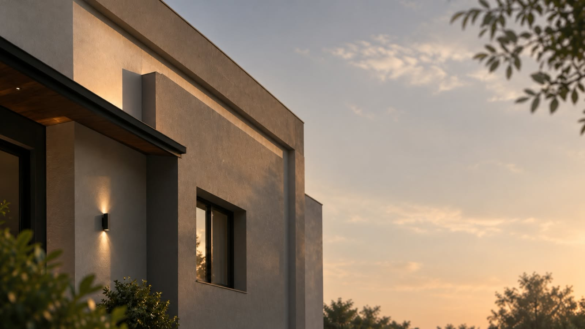
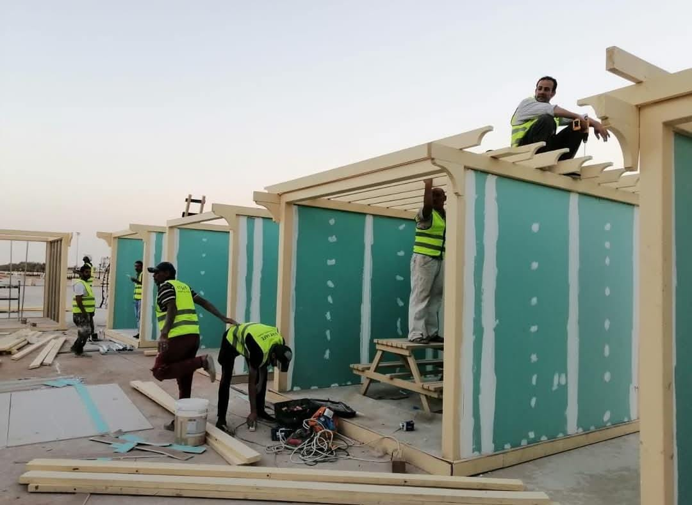
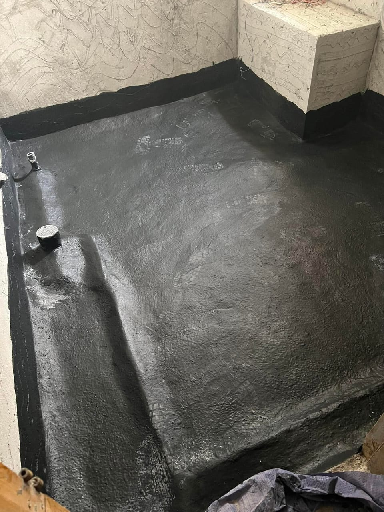
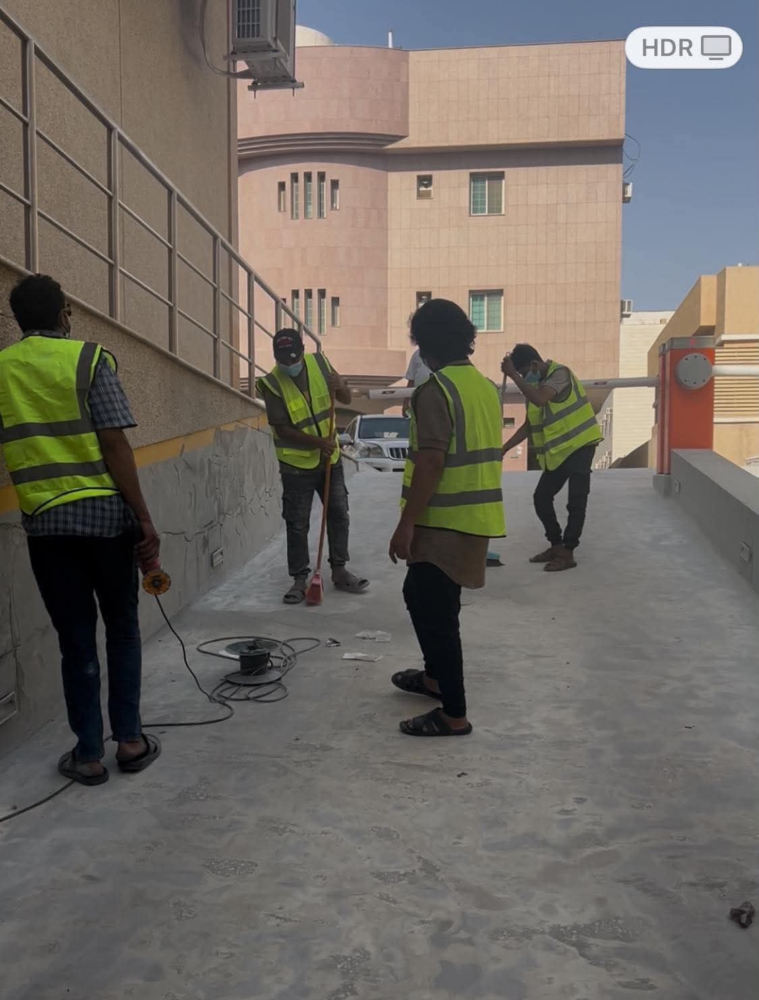
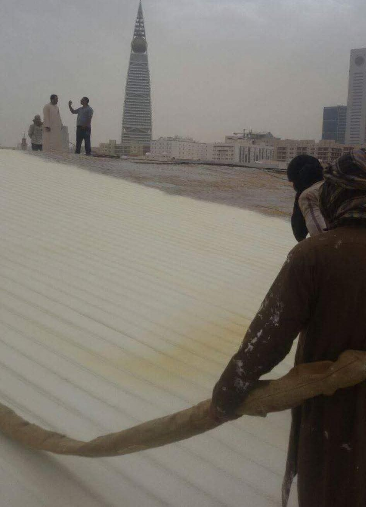
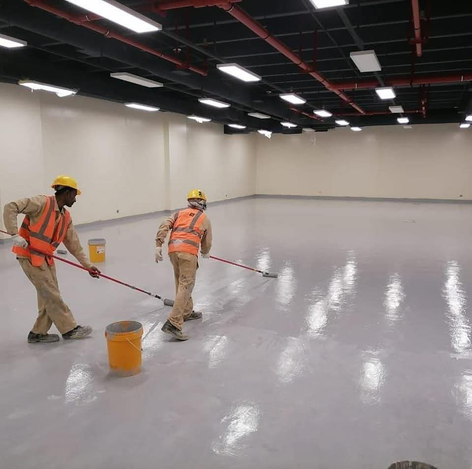
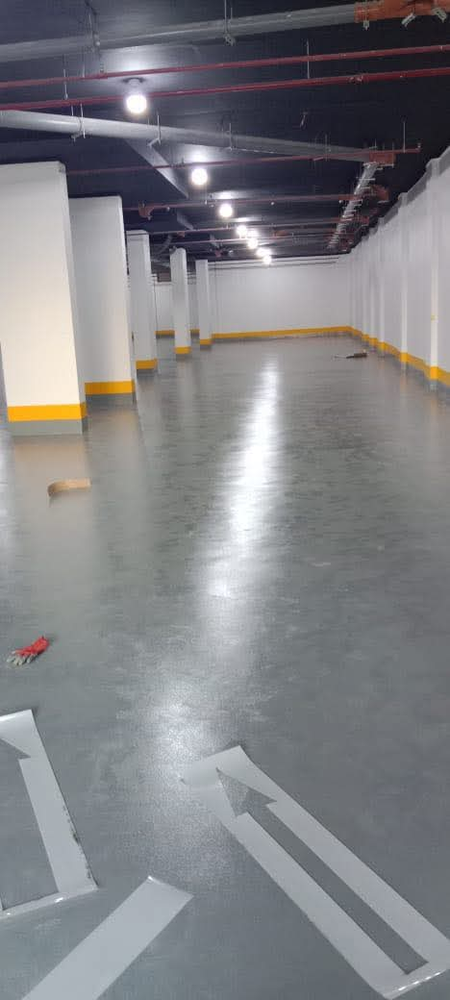
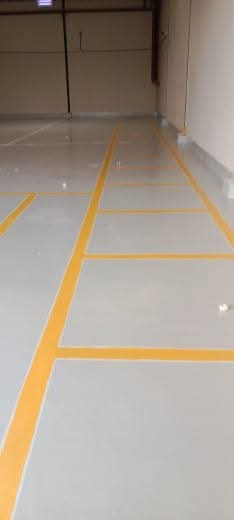
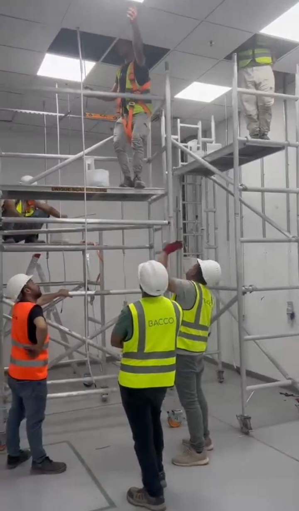
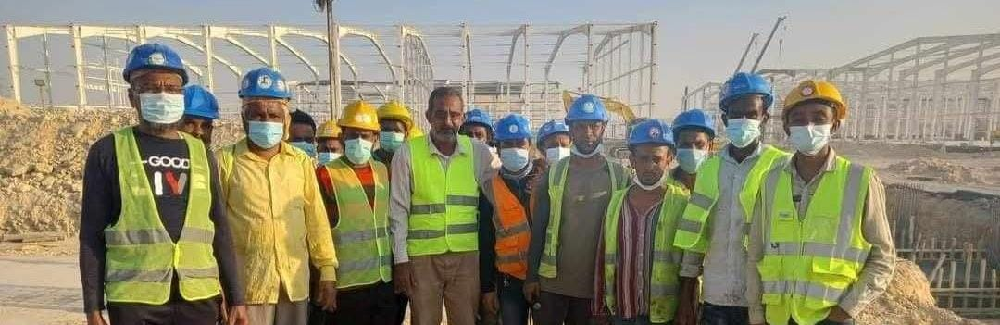

نحمي مبانيكم من
الماء والحرارة منذ
أكثر من 30 عامًا
Protecting your buildings from water and heat for over 30 years
عزل مائي وحراري وإيبوكسي، ترميمات وتشطيبات لكل أنواع المباني — السكنية والتجارية والحكومية والصناعية، بمواد معتمدة من موردين معروفين.
فريق ميداني يعرف المباني السعودية من الأساس حتى السطح
A field team that knows Saudi buildings from foundation to roof
نعمل منذ أكثر من ثلاثين عامًا في العزل والترميم والتشطيب، وننفّذ المشاريع بأنفسنا من المعاينة إلى التسليم، بدون وسطاء.
في العزل والترميم والتشطيب لمختلف أنواع المنشآت.
نعاين الموقع ونرد على استفساراتكم في أقرب وقت ممكن.
عزل، ترميم، وتشطيب تحت سقف واحد، فريق واحد مسؤول عن المشروع كاملًا.
من الرياض إلى جميع المناطق، لمختلف أنواع المنشآت.

فيلا بعد سنوات من الإهمال، أعدنا بناء واجهتها بالكامل
A villa left to wear down, rebuilt from the facade up
اسحب المؤشر لترى الفرق — من واجهة متهالكة إلى تصميم عصري متكامل. حرّك المؤشر يدويًا لمقارنة الصورتين.
نفس المشروع — زاوية وتشطيب مختلف للواجهة.
ثمانية تخصصات، فريق واحد مسؤول عن مشروعكم من البداية للنهاية
Eight specialties, one team responsible for your project start to finish

عازل أسمنتي وعازل ممبرين
Cementitious & Membrane Waterproofing
نعزل البدرومات والخزانات والمسابح والأسطح والحمامات والمطابخ لمنع تسرب المياه وحماية الهيكل الإنشائي من التلف على المدى الطويل.

ألواح الجفالي، البولي ستايرين والبولي إيثلين
Rock Wool, Polystyrene & Polyethylene Boards
نركّب طبقات عزل حراري تقلل من دخول الحرارة إلى المبنى، فتخفف الحمل على المكيفات وتقلل فاتورة الكهرباء صيفًا.

رش فوم البولي يوريثان
Sprayed Polyurethane Foam
طبقة رغوية متصلة بلا فواصل، تجمع بين العزل الحراري والمائي للأسطح، وتناسب المساحات الكبيرة والمصانع والمستودعات.



أرضيات إيبوكسي صناعية وتجارية
Industrial & Commercial Epoxy Floors
أرضية متينة، سهلة التنظيف ومقاومة للمواد الكيميائية والرطوبة، تناسب المستودعات والمواقف والمنشآت التجارية والصناعية.

أنظمة كاتمة للصوت
Acoustic Insulation Systems
نقلل انتقال الضوضاء بين الغرف والطوابق عبر أنظمة أسقف وجدران مصممة لامتصاص الصوت، غالبًا بالتكامل مع أعمال الجبس بورد.
ترميم المباني والفلل والمنشآت
Renovating Buildings, Villas & Facilities
نرمّم الفلل والأبراج والمنشآت الحكومية والصناعية، من إصلاح التشققات الإنشائية إلى إعادة بناء الواجهات بالكامل.

ديكورات جبس بورد وأسمنت بورد ودهانات
Gypsum Board, Cement Board & Painting
نفّذ تشطيبات داخلية وخارجية بالخشب والجبس بورد والدهانات، لإنهاء المشروع بمظهر متكامل بعد أعمال العزل والترميم.
أعمال مكملة لمشروع العزل والتشطيب
Supporting Work for Insulation & Finishing Projects
ننفذ أعمال السباكة والكهرباء والتكييف المرتبطة بمشاريع العزل والترميم، حتى لا تحتاجوا للتنسيق مع أكثر من مقاول.
نخدم جميع مناطق المملكة العربية السعودية
We serve every region of Saudi Arabia
أسئلة يطرحها عملاؤنا كثيرًا
Questions we hear often
العزل المائي يمنع تسرب الماء إلى هيكل المبنى، وهو ضروري للأسطح والبدرومات والخزانات والمسابح والحمامات، وأي منطقة معرضة للرطوبة أو مياه الأمطار.
العزل الحراري التقليدي (ألواح جفالي أو بولي ستايرين) يُركَّب كطبقات منفصلة. عزل الفوم يُرش كطبقة متصلة بلا فواصل، فيجمع بين العزل الحراري والمائي في آن واحد، وهو مناسب خاصة للأسطح الكبيرة.
نعم، نخدم جميع مناطق المملكة العربية السعودية. مقرنا الرئيسي في الرياض، وننفذ مشاريع في المدن والمناطق الأخرى حسب حجم المشروع.
تواصلوا معنا عبر واتساب أو نموذج التواصل في أسفل الصفحة مع وصف مختصر للمشروع وموقعه، وسنقوم بالتواصل معكم لتحديد موعد معاينة.
الأسطح، البدرومات، الخزانات، المسابح، الحمامات، المطابخ، وأرضيات المواقف والمستودعات — لكل سطح نوع عزل مناسب لطبيعة استخدامه.
تختلف المدة حسب نوع العزل أو الترميم ومساحة الموقع وحالته. نحدد مدة تقريبية بعد المعاينة المباشرة للمشروع.